Clustering
1. PC Component Price Time Series (Python Record Data)
1.1 Pre-classification of PC components
The python script for this part is data_clean/amazon/timeseries_converter.ipynb. All the preprocessed time series can be found at data/amazon folder on GitHub (see below for the definition of each file).
Data in amazon database is recorded in unequal-interval time series, since Keepa API write a new value to their database only when the price changes.
So, the first step of preprocessing is to rebuild a equal-interval time series from the database. Pandas is a useful tool to do this. Since it not only provides an SQL interface but also provides a powerful function called resample. With Pandas, historical price data in SQLite database can be easily converted into equal-interval time series. After several attempts, the time interval for resampling is assigned to 1 day.
| File Prefix | Meaning |
|---|---|
| NEWS | price history of the New in marketplace |
| USED | price history of the Used in marketplace |
| BUY_BOX | price history of the New buy box |
| EBAY_NEW | price history of the lowest new price on the respective eBay locale |
| EBAY_USED | price history of the lowest used price on the respective eBay locale |
Another thing needs to be considered is that Keepa API uses -1 as out-of-stock, but these negative values will disturb the following clustering. Therefore, all -1s in the time series are filled with a previous non-negative value to create a normal price time series.
But the out-of-stock data does contain some useful information, so a new time series called out-of-stock indicator that records the out-of-stock status is created, which all normal prices are converted into 0 and out-of-stock values are converted into 1.
Since the products are released in varied date, some products have data more than 4 years, but some products only have data less than 6 months. A pre-classification is performed on the products, all data are separated into different files based on their time span. The files are labeled by some suffixes.
| File Suffix | Meaning |
|---|---|
| s | time span less than 6 months |
| 6m | time span between 6 months to 1 year |
| 1y | time span between 1 year to 2 years |
| 2y | time span between 2 years to 4 years |
| 4y | time span more than 4 years |
| ts | time series, each row contains a time series of normal price separate by space. |
| osts | time series, each row contains a time series of out-of-stock indicators separate by space. |
| eqts | time series of normal prices but are truncated to same length. |
| eqosts | time series of out-of-stock indicators but are truncated to same length. |
| label | label, each row contains product type + product name as label |
Because some distance metrics in the following clustering require an equal-length time series, so time series all have a truncated version. For example, BUY_BOX_eqts_1y.txt contains the same products as BUY_BOX_ts_1y.txt, but the time spans of the data are truncated to exactly 1 year.
1.2 Clustering on unequal-length Time Series (KMeans, metric: DTW, Soft-DTW)
The python script for this part is cluster/amazon.ipynb. The pre-classified datasets are unequal-length time series. For example, the length of time series in BUY_BOX_ts_1y.txt can vary from 360(1 year) to 719(2 year).
DTW(Dynamic Time Warping) is a better metric to measure the similarity between time series compare to euclidean metric, especially for unequal-length time series(which euclidean metric is no longer available). The tslearn package provides this metric in Python and a time series version of KMeans clustering algorithm. A TimeSeriesKMeans model using DTW metric with n_clusters=8 is trained by the time series in NEW_ts_1y.txt. The table of clustering results shows below.
| CPU | GPU | Drive | |
|---|---|---|---|
| Cluster 1 | 2 | 16 | 1 |
| Cluster 2 | 5 | 20 | |
| Cluster 3 | 10 | 1 | 28 |
| Cluster 4 | 1 | 6 | |
| Cluster 5 | 27 | ||
| Cluster 6 | 4 | 14 | |
| Cluster 7 | 3 | 2 | 12 |
| Cluster 8 | 6 | 4 | 28 |
The visualization of clusters shows below.

Some patterns can be found in the clustering table and visualization:
(1) Cluster 1,5,6 are both GPU-dominated clusters, they all show increasing trends in price which indicates an abnormal impact on their prices.
(2) Cluster 2,3,7,8 are both drive-dominated clusters, they all follow a normal decreasing trend in price which occurs in most goods.
(3) There's no CPU-dominated cluster, but most CPUs(25) follow the normal decreasing trend and only 6 CPUs follow the abnormal increasing trend.
The cluster centers of DTW metric are kind of sharp that have many sudden jumps. A variant of DTW names soft-DTW gives much smoother cluster centers. A TimeSeriesKMeans model using soft-DTW metric with n_clusters=6 is trained by the same time series. The table of cluster result shows below.
| CPU | GPU | Drive | |
|---|---|---|---|
| Cluster 1 | 1 | 26 | |
| Cluster 2 | 15 | 3 | 40 |
| Cluster 3 | 8 | 4 | 38 |
| Cluster 4 | 1 | 17 | |
| Cluster 5 | 5 | 16 | |
| Cluster 6 | 1 | 14 |
The visualization of clusters shows below.

Similar patterns can be found in this model:
(1) Cluster 1,4,6 are both GPU-dominated clusters, they all show increasing trends in price which indicates an abnormal impact on their prices.
(2) Cluster 2,3,5 are both drive-dominated clusters, they all follow a normal decreasing trend in price which occurs in most goods.
(3) There's no CPU-dominated cluster, but most CPUs(28) follow the normal decreasing trend and only 3 CPUs follow the abnormal increasing trend.
(4) The cluster centers are much smoother that the trends are clearly shown from them.
1.3 Clustering on equal-length Time Series (KMeans, metric: Euclidean, Cross-correlation)
The python script for this part is cluster/amazon.ipynb.
Some metrics like euclidean and cross correlation in tslearn need equal-length time series as input. First, a TimeSeriesKMeans model using euclidean metric with n_clusters=6 is trained by the time series in NEW_eqts_1y.txt. The table of cluster result shows below.
| CPU | GPU | Drive | |
|---|---|---|---|
| Cluster 1 | 1 | 14 | 1 |
| Cluster 2 | 14 | 2 | 44 |
| Cluster 3 | 8 | 4 | 38 |
| Cluster 4 | 1 | 26 | 2 |
| Cluster 5 | 1 | 1 | 19 |
| Cluster 6 | 1 | 18 |
The visualization of clusters shows below.

This model gives a very similar clustering result with the DTW model and soft-DTW model. But the smoothness of cluster centers are between two DTW models.
Then, a KShape model using cross-correlation metric with n_clusters=4 is trained by the same time series. The table of cluster result shows below.
| CPU | GPU | Drive | |
|---|---|---|---|
| Cluster 1 | 17 | 16 | |
| Cluster 2 | 17 | 1 | |
| Cluster 3 | 14 | 12 | 76 |
| Cluster 4 | 35 | 1 |
The visualization of clusters shows below.

The number of clusters of this model is only 4, 2 GPU-dominated clusters and 2 CPU-drive-mixed clusters.
1.4 Summary of Time Series Clustering by Python
In this part, KMeans clustering is applied to the one-year Amazon historical price data with four different distance metrics including DTW, soft-DTW, euclidean, and cross-correlation. All models give similar clustering results: graphic cards are in clusters which follow an abnormal increasing trend of prices, CPUs and drives are in clusters which follow a normal decreasing trend of prices. This result suggests that graphic cards have taken the biggest impact from the pandemic and cryptocurrency boom.
The DTW and soft-DTW metrics show a great performance on clustering the unequal-length time series. And the soft-DTW and euclidean metrics give the most clear clustering centers. However, the implementations in tslearn package are slow, especially the soft-DTW metric. Therefore, the k values in these models are chosen arbitrarily without any validation like elbow rule or silhouette coefficient.
2. Crypto & Commodity (R Record Data)
The R script for this part is cluster/crypto.rmd.
2.1 Preparation of Crypto & Commodity Time Series
Time series of 8 cryptocurrencies(BTC,ETH,DOGE,LTC,BCH,ETC,XMR,DASH) and 5 commodities(Aluminum,Copper,Gold,Silver,Crude Oil) are cleaned from the raw data from Yahoo Finance and Coin Metrics. To be consistent with the following clustering model, all time series are truncated to recent 2 years(720 days) and their prices are re-scaled to (0,1) interval.
2.2 Clustering Model based on Amazon Prices
Since there are only 13 records of crypto & commodities, it's better to cluster them based on an existed clustering model. In this part, an R package dtwclust is used to build partition and hierarchical models. All models are trained by the time series in NEW_eqts_2y.txt.
First, KMeans models with k = 4:10 are trained and evaluated by multiple validation parameters. The result is shown below.
| k_4 | k_5 | k_6 | k_7 | k_8 | k_9 | k_10 | |
|---|---|---|---|---|---|---|---|
| Sil | 0.278 | 0.311 | 0.232 | 0.189 | 0.194 | 0.154 | 0.130 |
| CH | 110.334 | 102.347 | 88.674 | 81.615 | 67.634 | 61.940 | 53.926 |
| DB | 1.419 | 2.161 | 1.568 | 1.594 | 1.548 | 1.737 | 1.712 |
| DB* | 1.749 | 2.289 | 1.736 | 1.830 | 1.893 | 1.849 | 2.133 |
| D | 0.057 | 0.051 | 0.083 | 0.080 | 0.098 | 0.075 | 0.084 |
| COP | 0.179 | 0.159 | 0.138 | 0.133 | 0.126 | 0.120 | 0.124 |
Most parameters including the silhouette coefficient suggests that the best choice of k is 5. The clustering result of k=5 is shown below. The clustering result is similar to the KMeans in Python.
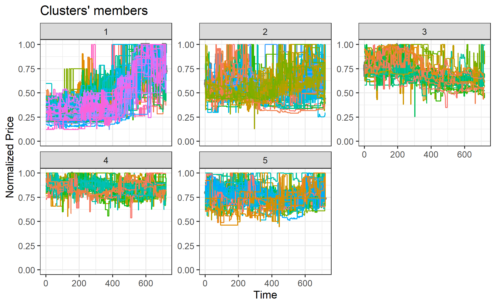With k=5, cluster 1 is GPU-dominated that follow the abnormal increasing trend in prices. Cluster 2,3 are CPU-Drive mixed cluster, and cluster 4,5 are drive-dominated cluster that follow the normal decreasing trend in prices.
| CPU | GPU | Drive | |
|---|---|---|---|
| Cluster 1 | 7 | 52 | 7 |
| Cluster 2 | 16 | 4 | 26 |
| Cluster 3 | 11 | 19 | |
| Cluster 4 | 4 | 19 | |
| Cluster 5 | 5 | 3 | 35 |
Then, a hierarchical clustering model is trained using DTW metrics. The dendrogram is shown below. Also, a HUGE picture of all time series can be found at picture/cluster/amazon_ts.png.
{kind=link}

The color bar in the dendrogram is the product type, where CPUs are golden, GPUs are red, and drives are blue). With k=5, three clusters on the left (pink, yellow, and green) are mainly drives and CPUs which follows the normal decreasing trend. Two clusters on the right (blue and purple) are mainly GPUs which follows the abnormal increasing trend. These clusters are consistent with the color bar. So, a good choice of k is 5.
To display the similarity between these products, three heatmaps are created using euclidean distance, DTW distance, and cosine similarity.
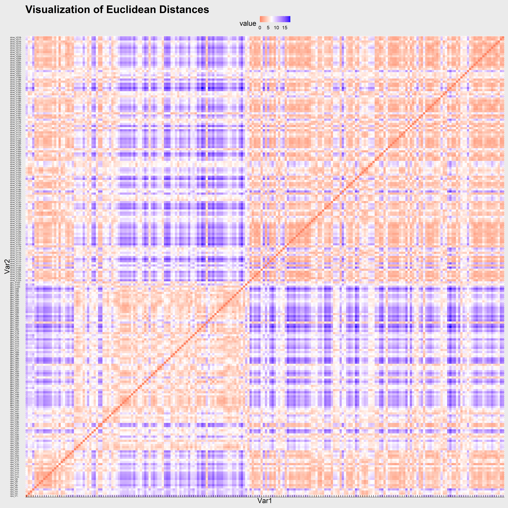 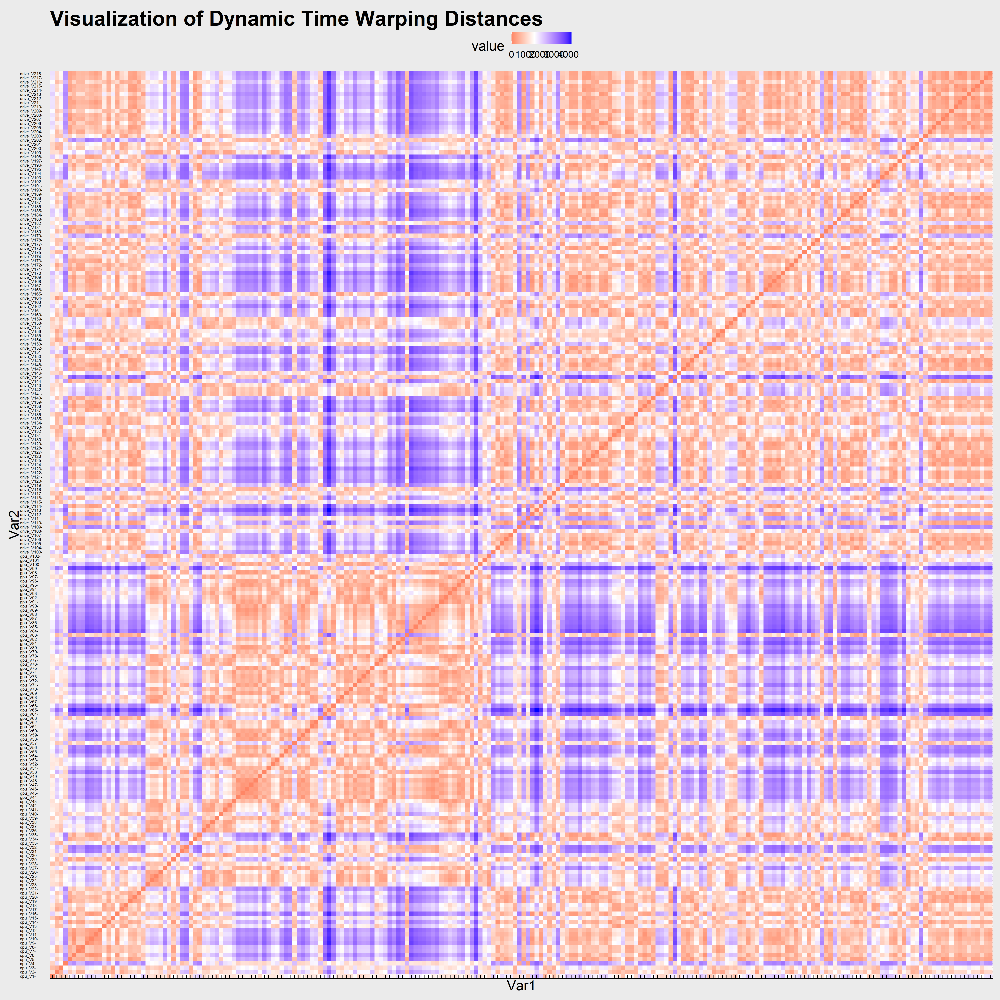 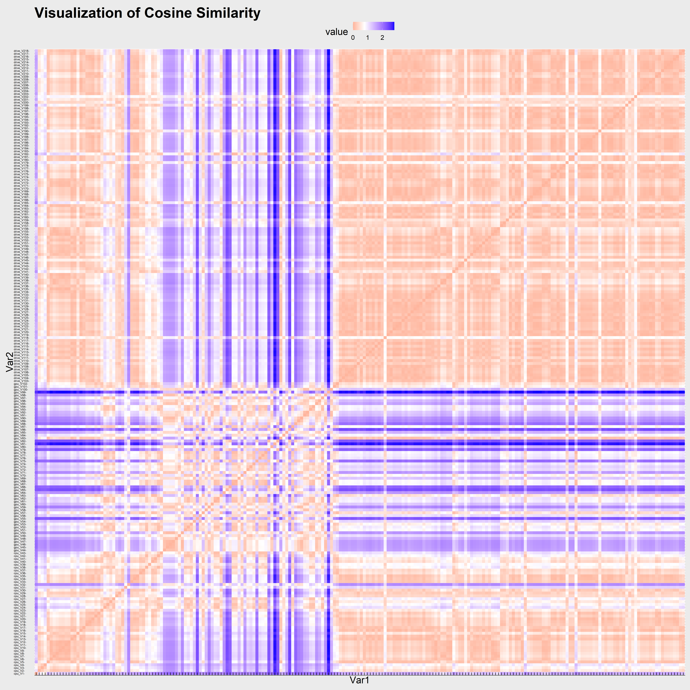The heatmaps show that CPU and drives have similar price time series, and GPUs have quite different price trend compare to CPUs and drives.
2.3 Cluster Prediction of Crypto Time Series
KMeans model with k=5 trained in Part 2.2 is used to predict all 8 crypto time series. The prediction is shown below. All cryptos are assigned to cluster 1 which is the graphic card cluster. This result indicates a strong similarity between graphic cards' prices and cryptocurrencies' prices and an auto-similarity among cryptocurrencies' prices themselves.
| BTC | ETH | DOGE | LTC | BCH | ETC | XMR | DASH |
|---|---|---|---|---|---|---|---|
| 1 | 1 | 1 | 1 | 1 | 1 | 1 | 1 |
A visualization of these time series is shown below.
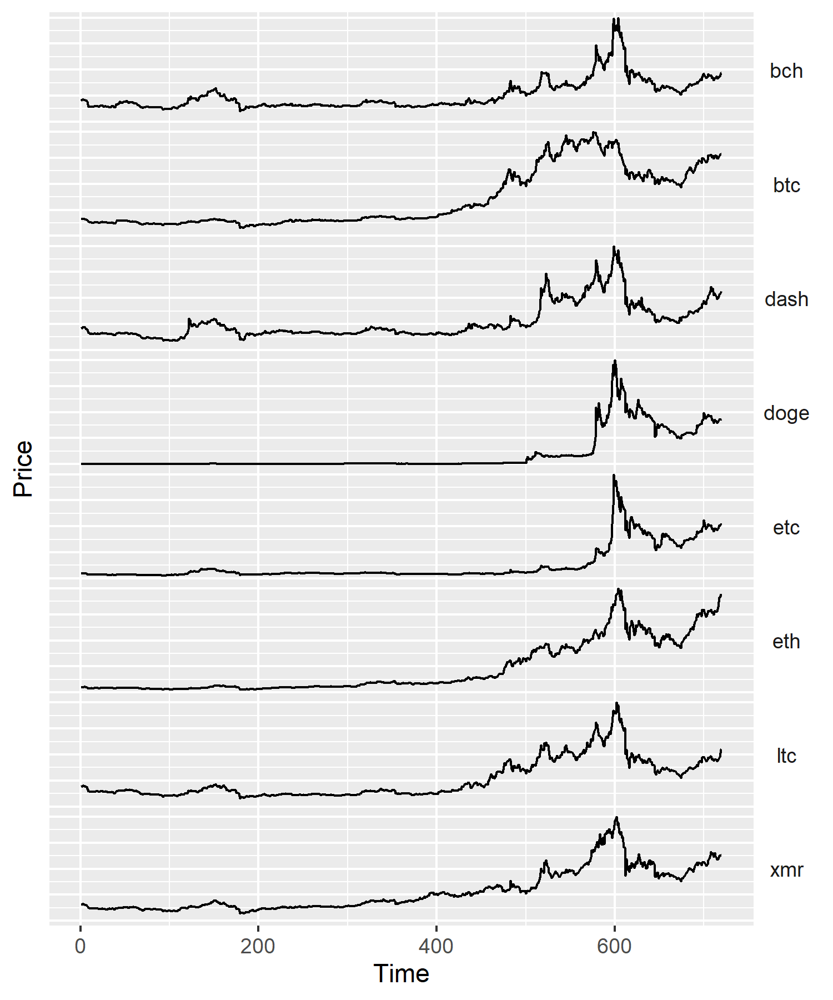2.4 Cluster Prediction of Commodity Time Series
KMeans model with k=5 trained in Part 2.2 is used to predict all 5 commodities time series. The prediction is shown below.
| Aluminum | Copper | Gold | Silver | Crude Oil |
|---|---|---|---|---|
| 5 | 2 | 4 | 2 | 5 |
A visualization of these time series is shown below.
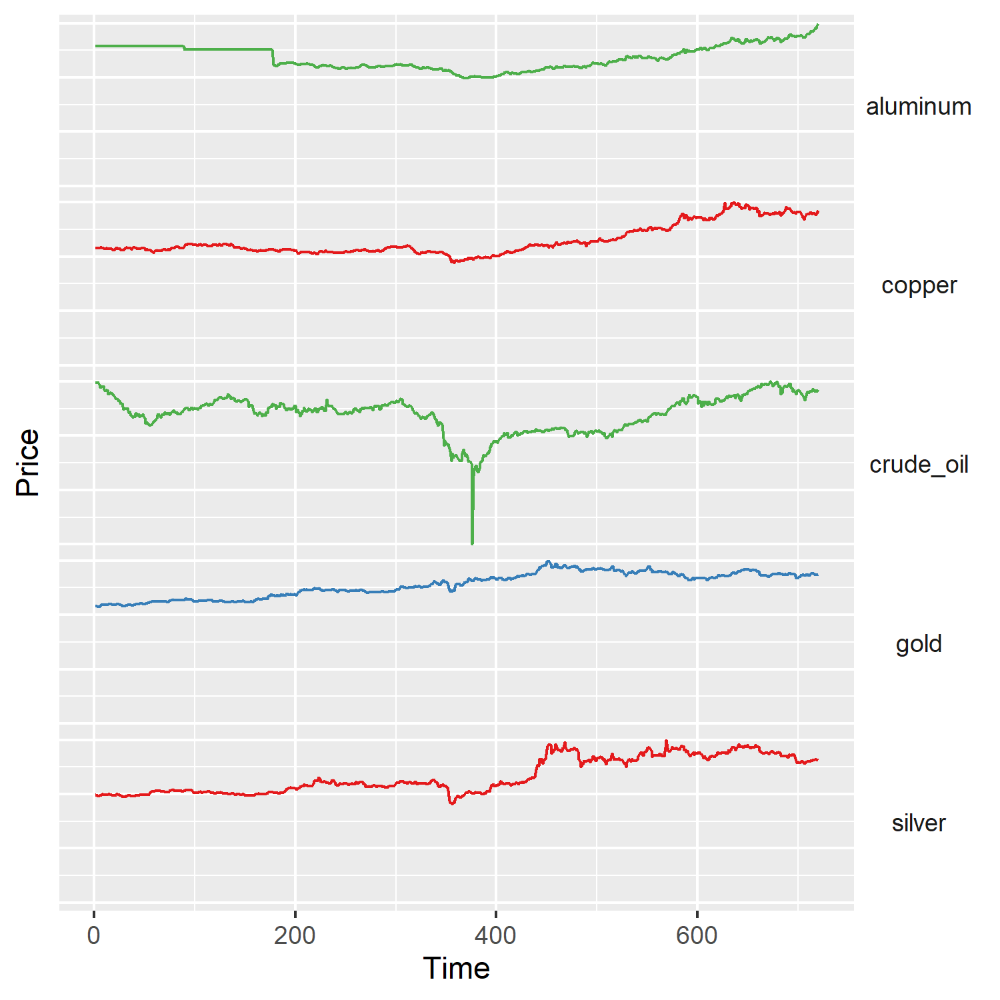2.5 Summary of Time Series Clustering by R
In this part, KMeans clustering and hierarchical clustering models are applied to the 2-year Amazon historical price data using DTW metrics. The best k=5 of KMeans model is selected by multiple validation parameters including silhouette coefficient. The clustering result also suggests that graphic cards have taken the biggest impact from the pandemic and cryptocurrency boom.
Cryptocurrencies and commodities are used as new data to the KMeans model. The predicted clusters indicate that there are strong correlation between the price of graphic cards and the price of cryptocurrencies.
3. YouTube Comments (Python Text Data)
The Python script for this part is cluster/youtube.ipynb.
3.1 Preparation of YouTube Comments
First, all comments labeled as 0(which means not assigned to any topic) or -1(which means assigned to multiple topics) are removed in this part. Also, since comments with very little words are likely to be meaningless and comments with too many words are likely to talk about multiple topics. The word counts in comments are limited in the range from 5 to 40. As a result, only 18,400 records are selected from the ata/comments_labeled.csv with over 140,000 comments.
After cleaning, CountVectorizer and TfidfVectorizer with max_feature=500 are applied to the selected comments to create the document-term matrix. Since the dataset is large enough, each DTM contains a full 500 features as expected. A PCA decomposition model with n_components=2 is applied to the comments to create 2D data for plotting.
3.2 KMeans Clustering on YouTube comments (metric: Euclidean)
KMeans models with k=2:7 are trained by the DTM from CountVectorizer and TfidfVectorizer. The clustering results of k=2,4,6 are shown below.
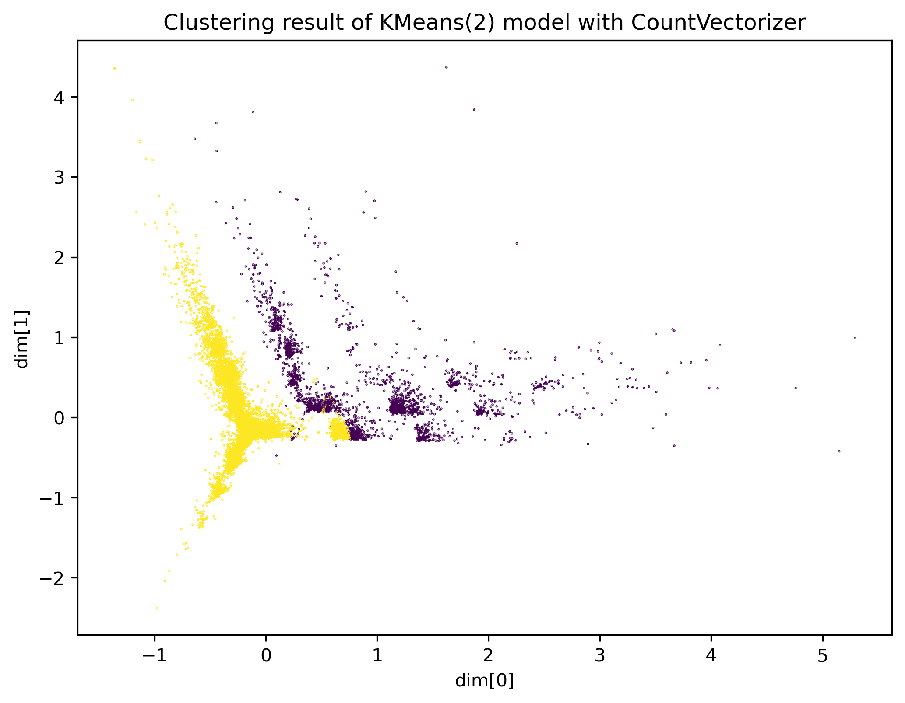 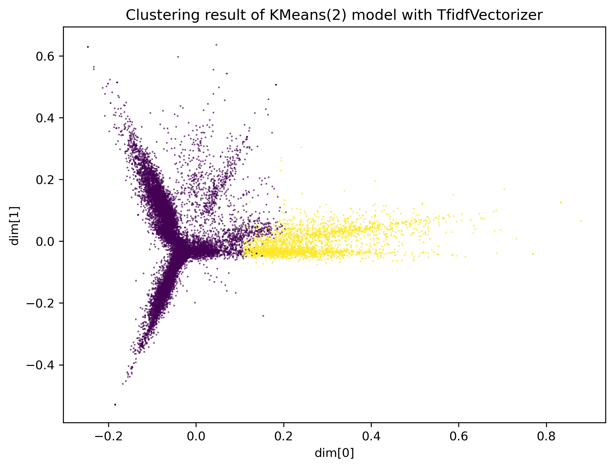 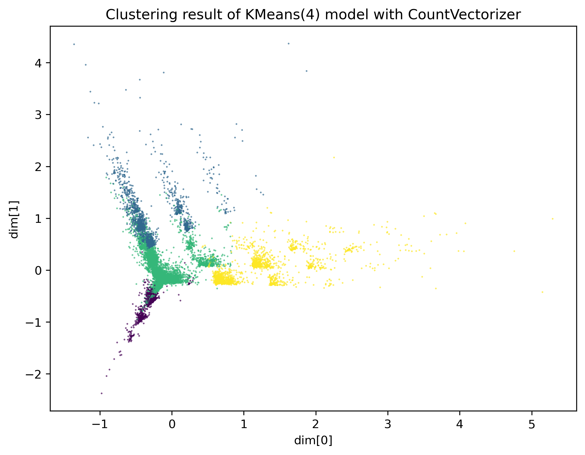 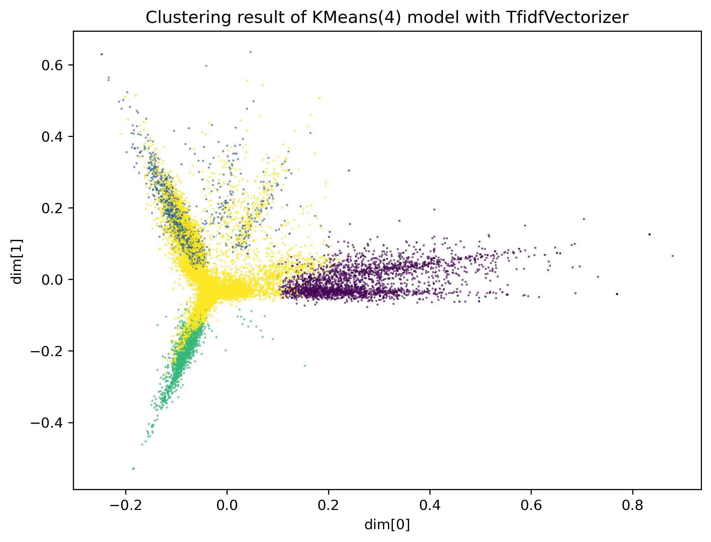 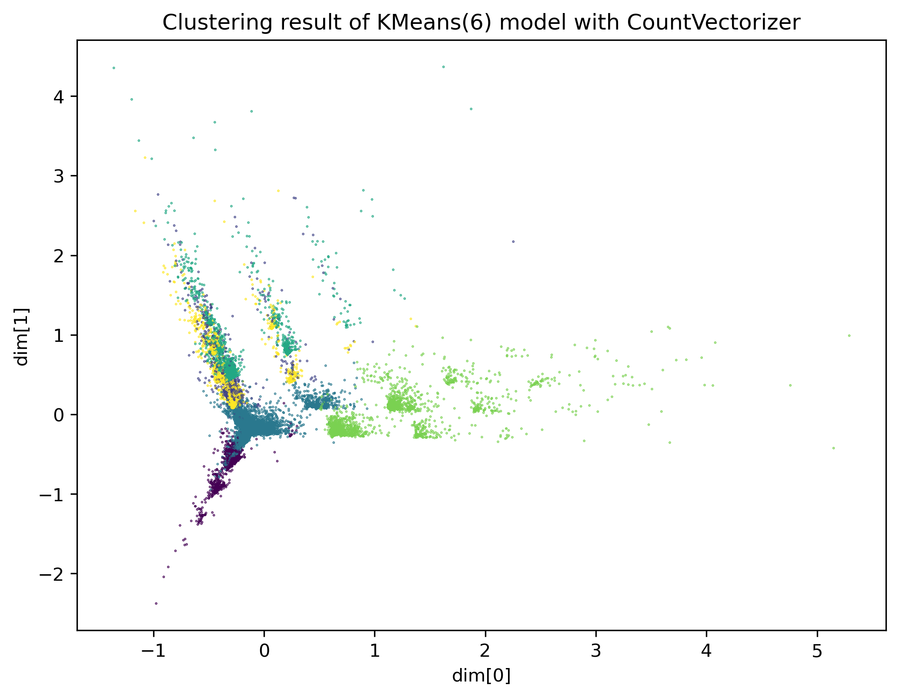 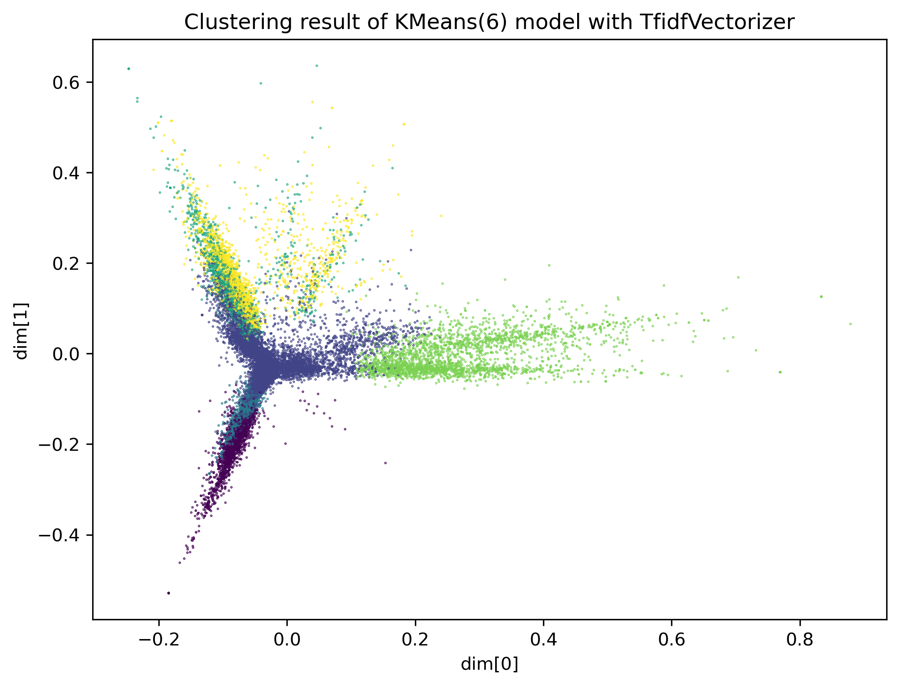Also, confusion matrix are calculated using the topic labels. The confusion matrix of KMeans model with k=2,4,6 using CountVectorizer are shown below.
| Topic 1 | Topic 2 | Topic 3 | Topic 4 | |
|---|---|---|---|---|
| Cluster 0 | 751 | 1859 | 22 | 15 |
| Cluster 1 | 5702 | 3849 | 3152 | 3139 |
| Topic 1 | Topic 2 | Topic 3 | Topic 4 | |
|---|---|---|---|---|
| Cluster 0 | 2751 | 2 | 3 | 2 |
| Cluster 1 | 1727 | 2959 | 3170 | 3150 |
| Cluster 2 | 11 | 2747 | 1 | 2 |
| Cluster 3 | 1964 | 0 | 0 | 0 |
| Topic 1 | Topic 2 | Topic 3 | Topic 4 | |
|---|---|---|---|---|
| Cluster 0 | 0 | 0 | 1777 | 0 |
| Cluster 1 | 9 | 2736 | 1 | 2 |
| Cluster 2 | 1978 | 0 | 0 | 0 |
| Cluster 3 | 2266 | 0 | 0 | 0 |
| Cluster 4 | 2200 | 2972 | 1396 | 1914 |
| Cluster 5 | 0 | 0 | 0 | 1238 |
From the confusion matrix, it's obvious that KMeans with k=2 doesn't separate the topic well. When k=4, there are two clusters that mainly contain Topic 1(GPU) comments and a cluster that mainly contains Topic 2(CPU) comments. When k increases to 6, more mono-topic clusters appear, for example, cluster 0 is a Topic 3(Phone) cluster and cluster 5 is a Topic 4(Tech Company) cluster.
More than one Topic 1(GPU) cluster appear in these models indicates that this topic can be separated to some sub-topics. Wordclouds of two Topic 1 clusters in KMeans(6) is shown below.
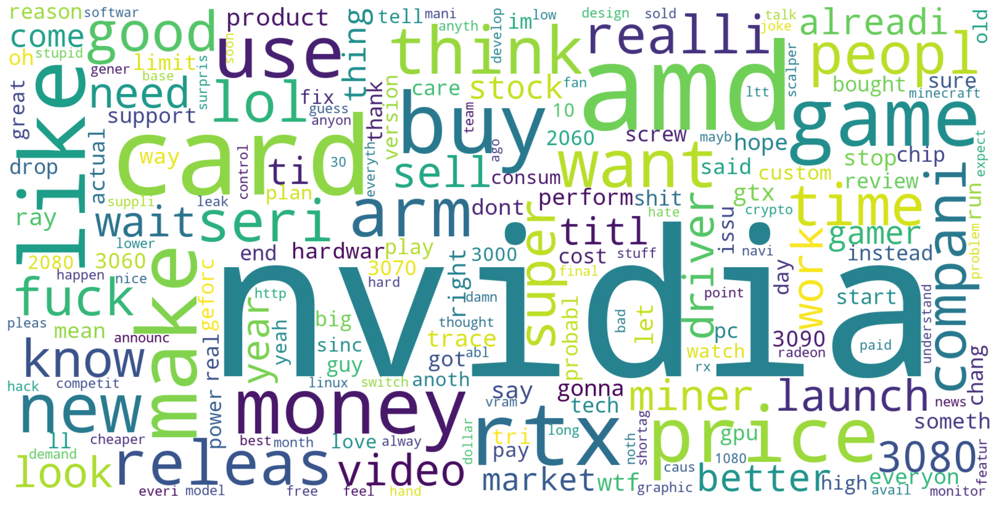 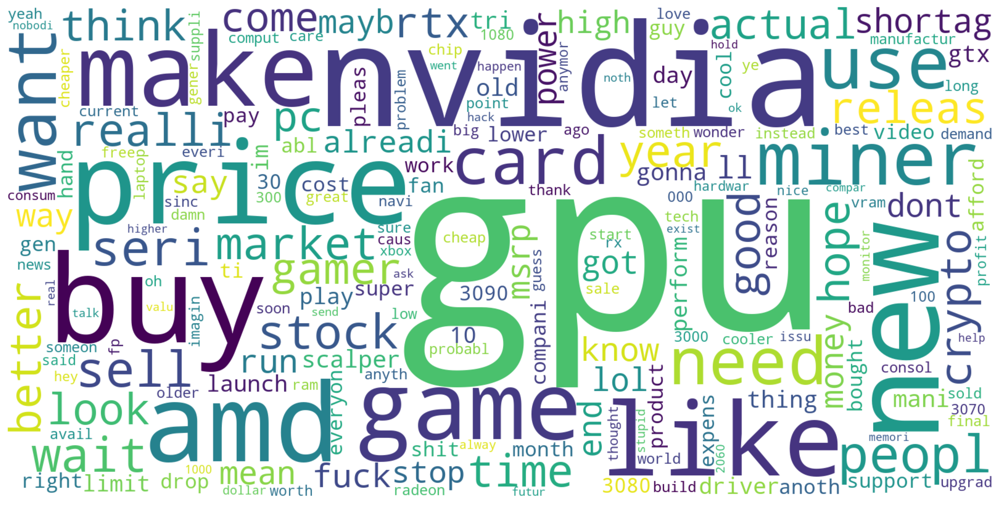To determine the best k of KMeans model, a silhouette analysis is performed. The KMeans(6) model gives the largest silhouette coefficient 0.12. The results are shown below.
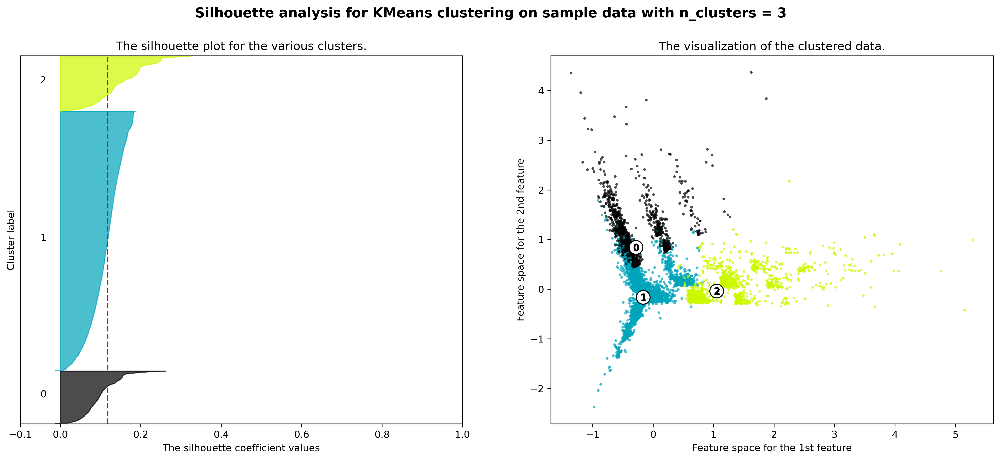 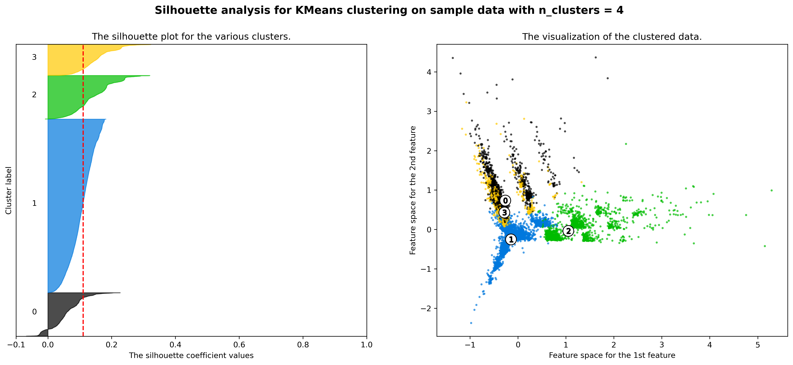 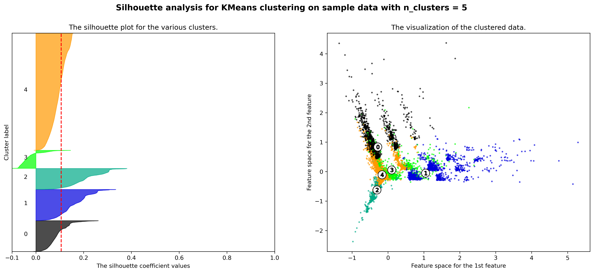 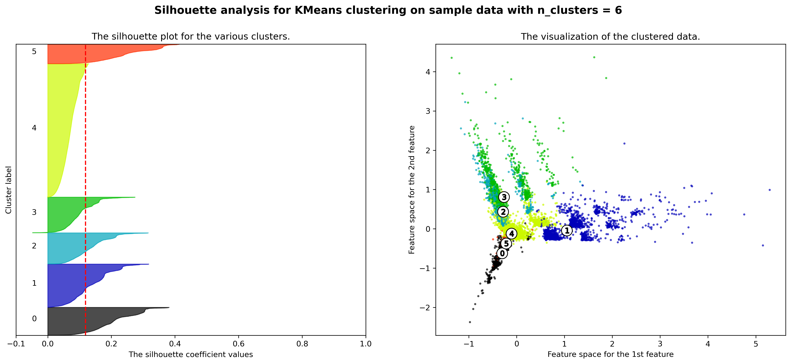3.3 DBScan & Hierarchical Clustering on YouTube comments (metric: Cosine)
A DBScan model is trained by the DTM from CountVectorizer. However, after multiple attempts on eps, min_sample, the model fails to give a reasonable clustering result. The result from a DBScan model with eps=0.13 and min_sample=20 is shown below.
| Topic 1 | Topic 2 | Topic 3 | Topic 4 | |
|---|---|---|---|---|
| Cluster 0 | 6299 | 4448 | 3163 | 3152 |
| Cluster 1 | 6 | 921 | 1 | 1 |
| Cluster 2 | 0 | 41 | 0 | 0 |
| Cluster 3 | 0 | 94 | 0 | 0 |
| Cluster 4 | 0 | 87 | 0 | 0 |
| Cluster 5 | 20 | 0 | 0 | 0 |
| Outlier | 128 | 117 | 10 | 1 |
The model only gives several small clusters and one huge cluster with mixed topics. It perhaps because the distance between text data is not well-defined. CountVectorizer does not normalize the text vector, distance between comments is also affected by the length of comments.
A hierarchical model is trained by the DTM from TfidfVectorizer. The dendrogram is shown below.
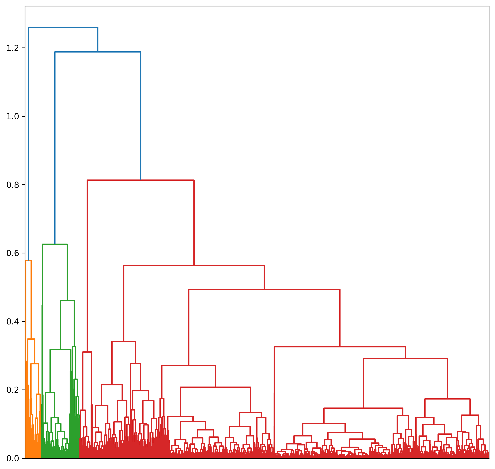The confusion matrix is calculated based on the hierarchical model with 8 clusters.
| Topic 1 | Topic 2 | Topic 3 | Topic 4 | |
|---|---|---|---|---|
| Cluster 1 | 0 | 88 | 0 | 0 |
| Cluster 2 | 0 | 570 | 0 | 0 |
| Cluster 3 | 55 | 0 | 0 | 0 |
| Cluster 4 | 1475 | 1 | 0 | 0 |
| Cluster 5 | 0 | 0 | 470 | 25 |
| Cluster 6 | 56 | 2554 | 6 | 11 |
| Cluster 7 | 4497 | 65 | 18 | 34 |
| Cluster 8 | 370 | 2430 | 2680 | 3084 |
The hierarchical model has a better clustering result comparing to the DBScan model. Cluster 2,4,5,6,7 are both mono-topic clusters with hundreds and thousands comments. Cluster 1,3 are mono-topic clusters but only have small amount of comments. Cluster 8 is a mixed-topic cluster.
3.4 Summary of Text Data Clustering
In this part, three different clustering method is applied to the YouTube comments dataset with 4 topics. KMeans models with k=4~6 are able to give some mono-topic clusters. Also, the results suggest that more than one sub-topic can be separated from the graphic card topic. The best choice of k is 6, which is chosen by the silhouette analysis. The DBScan model fails to give a reasonable clustering result due to the high dimensionality of text data and the information loss during decomposition. The hierarchical model is able to give some mono-topic clusters like the KMeans model.
Most models give a huge mixed-topic cluster. This remaining mixed-topic cluster indicates some implicit similarities between comments that are failed to cover by the pre-label (remember the comments are collected from the same YouTube channel, maybe many comments contain the channel name or the host name).